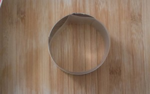
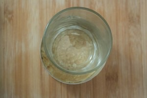
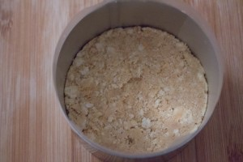
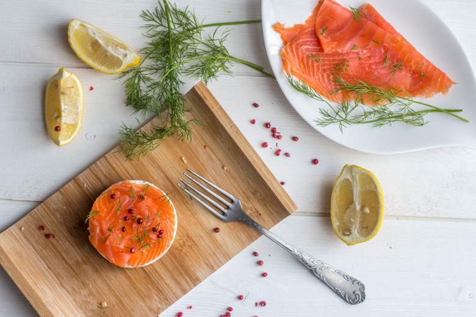
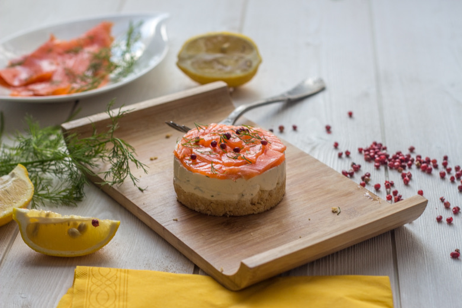
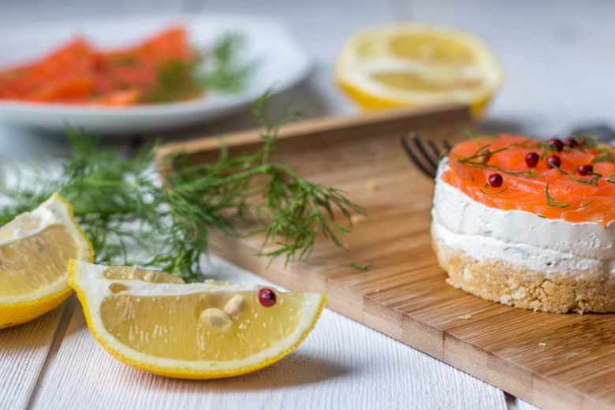

Cheesecake Saumon

Noël est déjà fini mais il est temps de penser aux recettes du réveillon du nouvel an! Je vous propose alors une délicieuse entrée : le « cheesecake saumon »!
J’avais prévu de vous proposer un menu de fêtes pour le réveillon et les magasins Leclerc ont eu la même idée car le défi suivant m’a été lancé :
Réaliser une recette pour les fêtes de fin d’années avec des produits « marque repère » et « nos régions ont du talent »! (il s’agit, pour ceux qui ne le savant pas des marques des magasins Leclerc)
J’ai évidemment accepté de relever le défi et j’ai même réalisé un menu en totalité pour vous avec entrée, plat et dessert comme j’avais prévu de le faire!! Je vais donc vous dévoiler chaque jour restant avant le nouvel an une recette de mon menu festif et j’espère qu’elles vous plairont!!
Aujourd’hui c’est donc parti pour l’entrée et je vous propose donc un cheesecake saumon, parfumé à l’aneth et au citron le tout surmonté de petites baies roses!
Si vous décidez de vous lancer dans cette recette, procurez vous du ruban rhodoïd pour faciliter le démoulage. Personnellement je n’en avais pas et j’ai tout simplement utilisé des feuilles transparentes que j’ai découpé à la bonne taille.
Cette recette peut être préparé la veille et vous pouvez également la faire en version mini mini pour servir en apéritifs! Place à la recette!
Enregistrer
Ingrédients
- Beurre - 50g
- Crakers nature (s'apparentent aux TUCS) - 100g
- Saumon fumé - 3 tranches
- Ricotta - 250g
- Cream cheese (fromage frais type St Moret, Philadelphia etc) - 250g
- Jus de citron - 3 càs
- Aneth
- Baies roses
Instructions
- Sur le plan de travail, préparer les emportes pièces A l'interieur placer du ruban rhodoïd pour obtenir un démoulage facile et net
- Mixer les crackers et le beurre fondu
- Bien mélanger et tapisser le fond de l'emporte pièce avec le mélange beurre-crackers
- Bien tasser le mélange (je me suis aidée d'un verre) et réserver au frais
- Dans un saladier, mélanger le cream cheese et la ricotta
- Ajouter le citron et l'aneth ciselée
- Déposer ce mélange dans l'emporte-pièce sur la base biscuitée
- Laisser au frais toute une nuit
- Le lendemain, découper de fines lamelles de saumon
- Procéder au démoulage des cheesecakes Astuce pour ceux qui n'ont pas de ruban : pousser délicatement le fond de cheesecake avec la base d'un verre vers le haut et récupérer le cheesecake délicatement. Déposez le sur l'assiette
- Disposer les lamelles de saumons sur le dessus du cheesecake
- Remettre au frais
- Au moment de servir, disposer quelques baies roses sur le dessus






Les tips de la communauté
Recette innovante très bien reçue malgré quelques avis négatifs isolés. Les commentaires soulignent l'originalité, la fraîcheur et la polyvalence (entrée ou apéritif). Plusieurs utilisateurs rapportent du succès à la dégustation.
Astuces
- Saint Moret ou Philadelphia sont de bons substituts au cream cheese
- Utiliser une ricotta de qualité pour le meilleur résultat
- Les cheesecakes individuels démoulés avec un ruban sont plus faciles
- C'est un plat très copieux en entrée
Variantes suggérées
- Ajouter du zeste de citron pour plus de pep's
- Remplacer l'aneth par de la ciboulette selon les préférences
- Ajouter des œufs de truites pour plus de texture croustillante
- Incorporer le saumon mixé à la ricotta plutôt que de le disposer en lanières
- Mouler dans des plaques silicone mini-muffins pour des portions apéritif
Ajustements signalés
- C'est un plat riche, bien dimensionner les portions en entrée